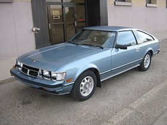
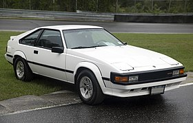
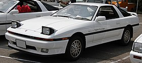
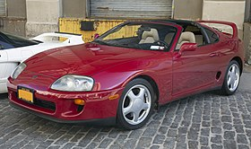
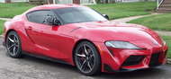

The Toyota Supra is a sports car and grand tourer manufactured by the Toyota Motor Corporation beginning in 1978. The name "supra" is derived from the Latin prefix, meaning "above", "to surpass" or "go beyond".
The initial four generations of the Supra were produced from 1978 to 2002. The fifth generation has been produced since March 2019 and went on sale in May 2019. The styling of the original Supra was derived from the Toyota Celica, but it was both longer and wider. Starting in mid-1986, the A70 Supra became a separate model from the Celica. In turn, Toyota also stopped using the prefix Celica and named the car Supra. Owing to the similarity and past of the Celica's name, it is frequently mistaken for the Supra, and vice versa. The first, second and third generations of the Supra were assembled at the Tahara plant in Tahara, Aichi, while the fourth generation was assembled at the Motomachi plant in Toyota City. The 5th generation of the Supra is assembled alongside the G29 BMW Z4 in Graz, Austria by Magna Steyr.
The Supra also traces much of its roots back to the 2000GT owing to an inline-6 layout. The first three generations were offered with a direct descendant to the Crown's and 2000GT's M engine. Interior aspects were also similar, as was the chassis code "A".
Along with this name, Toyota also included its own logo for the Supra. It was derived from the original Celica logo, being blue instead of orange. This logo was used until January 1986, when the A70 Supra was introduced. The new logo was similar in size, with orange writing on a red background, but without the dragon design. That logo, in turn, was on Supras until 1991 when Toyota switched to its current oval company logo. (The dragon logo was a Celica logo regardless of what colour it was. It appeared on the first two generations of the Supra because they were officially Toyota Celicas. The dragon logo was used for the Celica line until it was also discontinued.)
In 1998, Toyota ceased sales of the fourth generation of the Supra in the United States. Production of the fourth generation of the Supra for worldwide markets ended in 2002.
In January 2019, the fifth generation of the Supra, which was co-developed with the G29 Z4, was introduced.
The first generation of the Supra was based largely upon the Toyota Celica liftback, but was longer by 129.5 mm (5.10 in). The doors and rear section were shared with the Celica but the front panels were elongated to accommodate the Inline-6 instead of the Celica's 4-cylinder engine. Toyota's original plan for the Supra at this time was to make it a competitor to the very popular Datsun (now Nissan) Z-car.
In mid 1981, Toyota completely redesigned the Celica Supra as well as the entire Celica lineup for the 1982 model year. In Japan, they were known as the Celica XX, but the Celica Supra name was used for the world market. Still based on the Celica platform, there were several key differences, most notably the design of the front end and fully retractable pop-up headlights. Other differences were the inline-six rather than four-cylinder engine, as well as an increase in length and wheelbase to accommodate the larger engine. Cars installed with the 5M engine were slightly wider, while other models remained compliant with Japanese dimension regulations.
In February 1986, the bonds between the Celica and the Supra were cut; they were now two completely different models. The Celica changed to a front-wheel drive layout, using the Toyota "T" platform associated with the Corona, while the Supra kept its rear-wheel-drive layout. The engine was updated to a more powerful 2,954 cc (3.0 L) inline-six engine rated at 149 kW (200 hp; 203 PS). Although initially only available with naturally aspirated engines, a turbocharged version was added in the 1987 model year. The Supra was now mechanically related to the Soarer.
All Japanese market models with the various versions of the 2.0 L engine were slightly narrower overall so as to be in compliance with Japanese Government dimension regulations so that Japanese buyers weren't liable for yearly taxes for driving a larger car.
The A80 program began in February 1989 under various teams for design, product planning, and engineering led by Isao Tsuzuki. By the middle of 1990, a final A80 design concept from Toyota Technical Centre Aichi was approved and frozen for production in late 1990. The first test mules were hand-built in A70 bodies during late 1990, followed by the first A80 prototypes being hand-assembled in 1991. This design of the Supra is my favorite.
The fifth-generation Supra was released in January 2019 after 17 years off the market as the GR Supra, part of Toyota's Gazoo Racing (GR) family of performance cars. It was developed in partnership with BMW, sharing the platform and many parts from the BMW Z4 (G29) with BMW derived 4- and 6-cylinder turbocharged engines and maintaining rear-wheel drive layout from the previous Supra. The model is designated with BMW model codes "J29" or "DB", however Toyota used the "A90" and "A91" codes for promotional and marketing materials for the fifth-generation Supra to maintain the lineage from the previous Supra. The GR Supra is manufactured at the Magna Steyr plant in Graz, Austria alongside the Z4